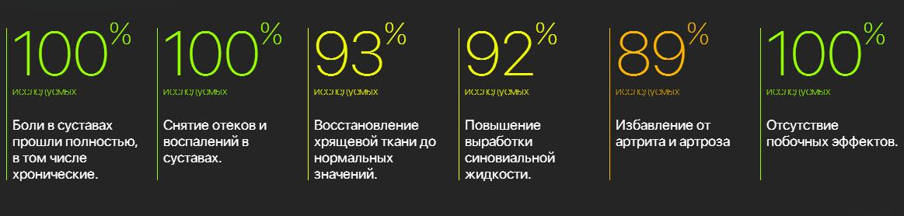
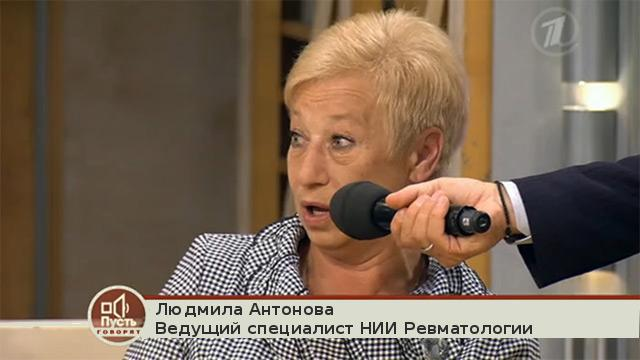
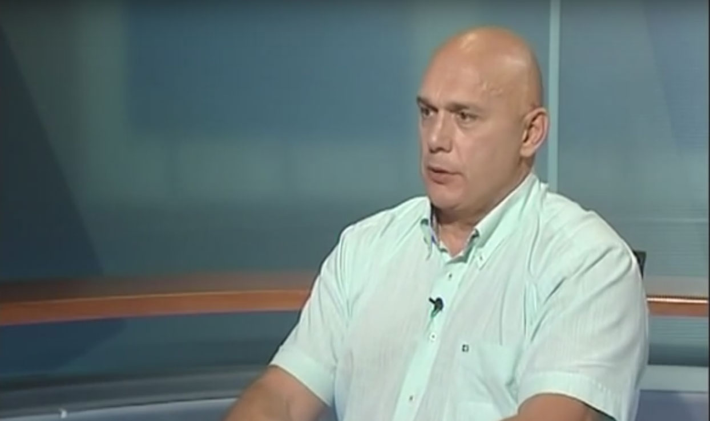
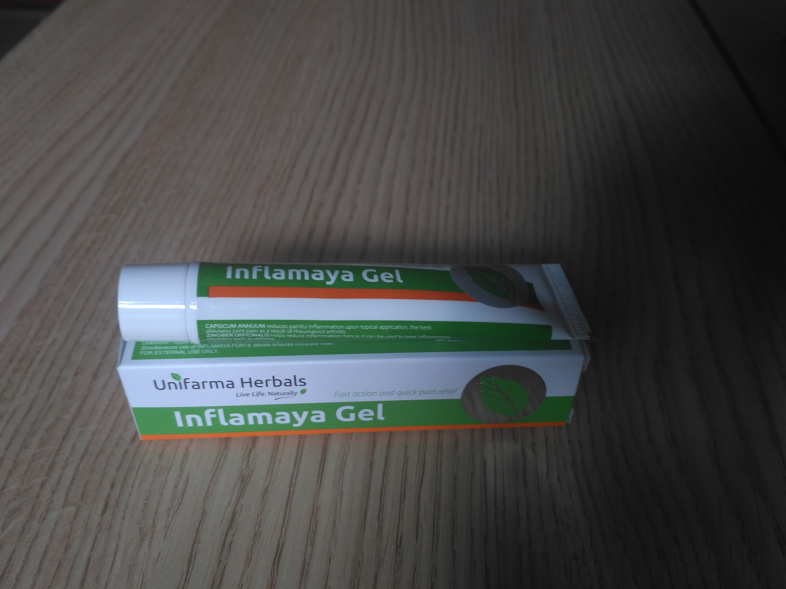

Правда о возможности восстановить суставы за 30 дней стоила Малахову карьеры. Так ли это?
«На самом деле» – программа, в которой невозможно солгать, так как участники подключены к детектору лжи.
Уход известного телеведущего Андрея Малахова из программы «Пусть говорят» и с Первого канала до сих пор покрыт завесой тайны. Существует множество неподтвержденных версий. По одной из них, Малахов был замешан в скандале с аптечной мафией. Сегодня мы выясним, что случилось на самом деле, у главного героя скандала — самого Андрея Малахова.
Ведущий передачи Дмитрий Шепелев приветствует своего гостя и переходит сразу к делу.
Дмитрий Шепелев: Андрей, готов ответить на вопросы?
Андрей Малахов: Да, конечно.
Детектор лжи (полиграф) включен
Дмитрий Шепелев: Твое имя – Андрей?
Андрей Малахов: Да
Ответ полиграфа: Это правда
Дмитрий Шепелев: До недавнего времени ты был ведущим программы «Пусть говорят»?
Андрей Малахов: Да
Ответ полиграфа: Это правда
Дмитрий Шепелев: Ты сам ушел из программы и с Первого канала?
Андрей Малахов: Сам, но я был вынужден это сделать, потому что меня «попросили».
Дмитрий Шепелев: Не мог бы ты рассказать, что стало причиной скандала?
Андрей Малахов: В одном из последних выпусков программы (который так и не вышел в эфир) поднял скользкую тему, в результате появились разногласия с руководством, и меня попросили уйти.
Дмитрий Шепелев: Андрей, задам тебе прямой вопрос и хочу получить на него такой же прямой ответ.
Андрей молчит, видно, как у него повышается пульс. Он начинает волноваться.
Дмитрий Шепелев: Ходят слухи, что последний выпуск программы «Пусть говорят» был посвящен какому-то новому средству для восстановления больных суставов, которое не пускает в магазины аптечная мафия. Правда ли это?
Зал замер, ждет ответа Малахова. Он некоторое время молчит.
Андрей Малахов: Да, это правда. И этот препарат действительно позволяет восстановить даже сильно разрушенные суставы всего за месяц приема. Это средство способно спасти многих людей от боли и страданий, от ограничений подвижности и инвалидности. Препарат прошел все необходимые клинические испытания, которые показали его крайне высокую эффективность (оно эффективнее всех известных аналогов в 5-7 раз)! Это средство может спасти от инвалидности сотни тысяч человек, однако его искусственно не пускают на рынок…
Дмитрий Шепелев: Как называется это средство?
Андрей Малахов: Оно называется Inflamaya. Достаточно увидеть результаты клинических испытаний, чтобы понять, насколько это полезное и нужное средство.
Результаты клинических испытаний Inflamaya, проведенные в Московском научном центре неврологии
Дмитрий Шепелев: И этот Inflamaya не продается в аптеках?
Андрей Малахов: Нет. В том то и дело.Разработка прошла многоступенчатое тестирование в России, Казахстане, Беларуси, Германии, Израиле и Киргизии получила лицензии и сертификаты качества. Однако его не пропустили в аптечные сети. Причем затормозили на самом высоком уровне. Без объяснения причин.
Отрывок из передачи «Пусть говорят», которая так и не была показана по ТВ.
Дмитрий Шепелев: Но причины все-таки известны?
Андрей Малахов: Они очевидны. Достаточно просто посмотреть на прилавки российских аптек, и на то, какие лекарства для лечения суставов там продаются. Хондропротекторы (которые уже 10 лет запрещены в Америке из-за того, что они делают хрящ затвердевшим и, как следствие, еще больше ухудшают состояние сустава), а также различные мази, которые не лечат, а лишь временно купируют боль. Наши аптеки экономически не заинтересованы в том, чтобы люди становились здоровыми. Им это просто невыгодно. Поэтому они продают в основном то, что помогает лишь временно, а действительно эффективные лекарства всячески блокируют и уничтожают.
Дмитрий Шепелев: Андрей, ходят слухи, что большую часть информации по этому вопросу тебе предоставил известный российский врач-ортопед Бубновский Сергей Михайлович, который при этом отказался сниматься в «Пусть говорят». Так ли это?
Андрей Малахов: Да, это так.
Дмитрий Шепелев: Нам очень сложно было уговорить Сергея Михайловича стать участником нашей передачи, но все-таки нам это удалось. Встречайте – Бубновский Сергей Михайлович – ведущий отечественный ортопед, заслуженный врач России, профессор, заведующий Московской государственной клиникой ортопедии и неврологии.
Дмитрий Шепелев: Сергей Михайлович, скажите, известен ли вам такой препарат как Inflamaya? Действительно ли он настолько хорош, как говорит об этом Андрей?
Сергей Бубновский: Да, мне известен этот препарат. И известна его эффективность. На сегодняшний день единственный препарат, который позволяет именно восстановить разрушенную хрящевую ткань и восстановить подвижность суставов. Но, к сожалению, в наших аптеках его не купить. И тут замешаны очень большие деньги и очень серьезные люди.
Дмитрий Шепелев: Можете рассказать, кто?
Сергей Бубновский: Извините, я не могу и не буду отвечать на подобные вопросы. Я вообще сюда пришел.
Бубновский срывает датчики и уходит из студии. Зал снова начинает шуметь.
Дмитрий Шепелев: Такое в нашей студии впервые.
Зал начинает возмущаться, ведущему с трудом удается успокоить присутствующих
Дмитрий Шепелев: Андрей, к тебе вопрос. Опять-таки ходят слухи, что сегодня Inflamaya все-таки можно где-то купить причем по весьма доступной цене. Так ли это?
Андрей Малахов: Это так. После скандала вокруг программы «Пусть говорят» препаратом заинтересовалось движение «Здоровое население», которое совместно с НИИ Ревматологии проводит специальную акцию, целью которой является распространение информации о данном средстве среди населения России,Казахстана и Киргизии.
В рамках этой акции любой житель стран СНГ и ЕС может заказать уникальный препарат для безоперационного восстановления суставов Inflamaya со скидкой. Для этого нужно оставить заявку на официальном сайте производителя до (включительно).
Дмитрий Шепелев: Андрей, большое спасибо тебе за то, что посетил нашу передачу и рассказал правду.
Андрей Малахов: Надеюсь, что хоть кому-нибудь этот препарат поможет стать здоровым. Тогда и мой уход с Первого канала был бы не зря.
Внимание! Ввиду того, что информация о геле Inflamaya появилась на многих сайтах и число заявок на него растет, запасы Inflamaya стремительно уменьшаются. Поэтому если вы хотите восстановить суставы, закажите Inflamaya, пока он еще есть в наличии в городе .
Комментарии
Большое спасибо за передачу. Очень интересная и эмоциональная. Инфламаю заказала, обязательно расскажу о нем..
Тоже заказал. Хорошо, что есть люди, которым не все равно. Стал значительно лучше относиться к Малахову после этого всего.
Полностью подтверждаю! Inflamaya – просто великолепное средство. У меня болел сустав на ноге лет 5 больше даже. Ничего не помогало. Кстати доставили оперативно, за пару дней буквально. Я сама в городе живу .Как стала принимать ээто средство, прошел примерно за 3 недели. После этого не болел ни разу! Рекомендую попробовать всем.
Читала про Inflamaya в какой-то медицинской газете. Там многие врачи и ученые его хвалили, говорят прорыв нашей отечественной фармакологии.
Заказал по акции. Жаль, что много его заказать нельзя.
Страшная правда о наших больницах и аптеках. Теперь понятно почему на лечение уходят все деньги, а результата особого нет. Врачи продажные
Подруга рассказывала про это средство. Очень хорошо про него отзывалась. Она инвалидом стала из-за суставов. Очень часто жаловалась, как они болят и ее мучают. В последнее время говорит, не болят совсем. Даже без палочки иногда ходит. Использует Inflamaya где-то неделю.
У мужа был остеохондроз. Ходили сначала по врачам, не помогло. Потом по всяким целителям – об этом даже говорить не хочется. Примерно недели 3 назад узнали про Inflamaya. Примерно 2 недели испльзует. Улучшения уже есть и они существенные.
Сделал заявку. Обещали в течение недели смогу получить на почте. Оперативно. Живу в Курске
Заказала
Болели суставы в коленях. Ноющая боль сопровождала почти всего. Пробовала многие препараты и процедуры, даже разные народные рецепты. Ничто не помогало так, как Inflamaya. Это препарат настоящее чудо! 
Артроз суставов прошел примерно за 2 недели приема Inflamaya. Все-таки наши ученые лучшие в мире!
Спасибо!